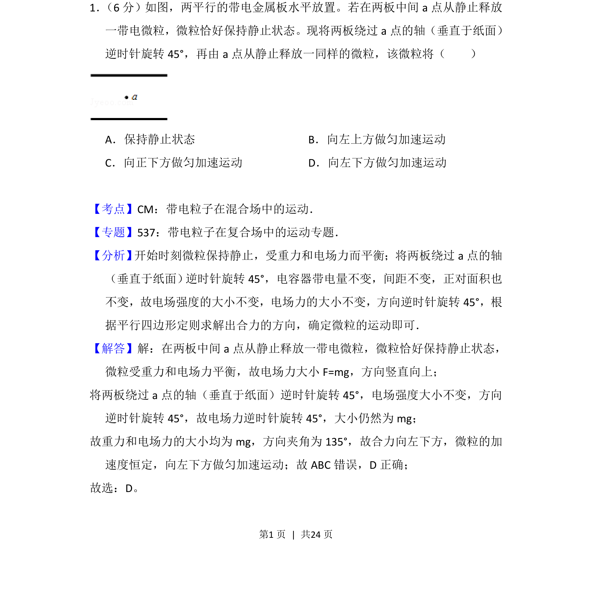
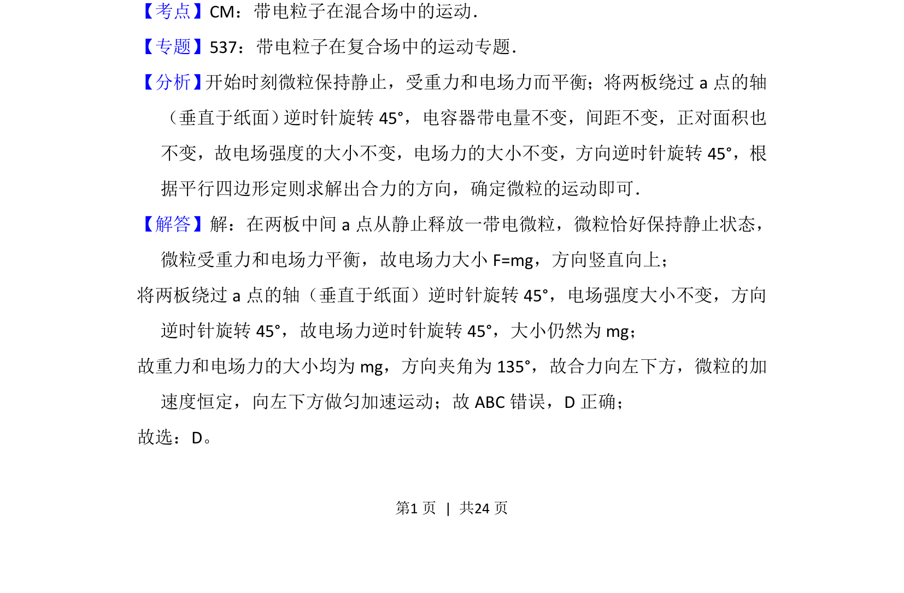
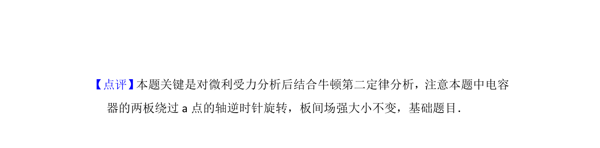

考点：力的平衡 电场力 力的合成 运动状态

微粒在电容器中受重力和电场力平衡，极板旋转后合力方向改变，微粒做匀加速直线运动。


📄 原 PDF 第 1 页：
素材/真题/吉林/2008-2024·（吉林）物理高考真题/2015年高考物理试卷（新课标Ⅱ）（解析卷）.pdf
1． （6分）如图，两平行的带电金属板水平放置。若在两板中间a点从静止释放 一带电微粒，微粒恰好保持静止状态。现将两板绕过a点的轴（垂直于纸面） 逆时针旋转45°，再由a点从静止释放一同样的微粒，该微粒将（ ） A．保持静止状态B．向左上方做匀加速运动 C．向正下方做匀加速运动D．向左下方做匀加速运动
【考点】CM：带电粒子在混合场中的运动．菁优网版权所有 【专题】537：带电粒子在复合场中的运动专题． 【分析】 开始时刻微粒保持静止，受重力和电场力而平衡；将两板绕过a点的轴 （垂直于纸面） 逆时针旋转45°，电容器带电量不变，间距不变，正对面积也 不变，故电场强度的大小不变，电场力的大小不变，方向逆时针旋转45°，根 据平行四边形定则求解出合力的方向，确定微粒的运动即可． 【解答】解：在两板中间a点从静止释放一带电微粒，微粒恰好保持静止状态， 微粒受重力和电场力平衡，故电场力大小F=mg，方向竖直向上； 将两板绕过a点的轴（垂直于纸面）逆时针旋转45°，电场强度大小不变，方向 逆时针旋转45°，故电场力逆时针旋转45°，大小仍然为mg； 故重力和电场力的大小均为mg，方向夹角为135°，故合力向左下方，微粒的加 速度恒定，向左下方做匀加速运动；故ABC错误，D正确； 故选：D。